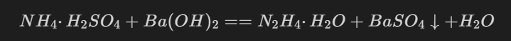
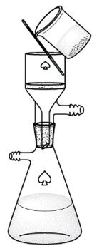
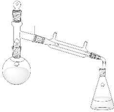
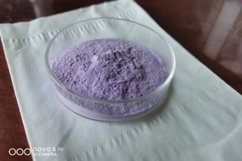
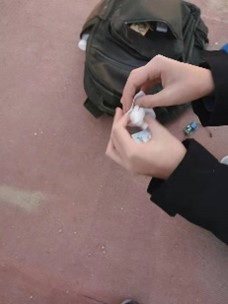

关于一种含能配合物材料的制取与性质探究
天津市耀华中学
高中部 郝元庆老师组 -- 化学
序言
现代社会的材料科学发展一直在致力于寻找一种放能速度较快，储能期间能量损耗率较低的材料，用于军事、民用方面，如开采矿山等.
目前，主流的含能材料有2，4，6三硝基甲苯（TNT），黑索金，季戊四醇四硝酸酯（太安），这类硝基炸药虽然爆速高，威力大，但在生产过程中产生大量有毒有害废水，不利于环境健康，而且易被相关部门检测，因此二硝酸三肼合镍（NHN）引起人们重视。本文章将进行硝酸肼镍的合成，探究物理，化学性质，并进行实际测试，由于相关原料及成品受到严格管制，所以将不赘述合成中的细节。
实验过程是在安全条件下进行制备（少量）和试验，文中所有数据均来自实验测定，误差包括但不限于质量误差、空气湿度、仪器精度等影响。
目录
-
关于能材
- 1.1 能材总述
- 1.2 能材的分解过程变化
- 1.3 氧平衡
-
二硝酸三肼合镍
- 2.1 NHN的基本性质
- 2.2 NHN的制备过程及注意事项
- 2.2.1 制备过程的概述
- 2.2.2 制备过程与实际操作
- 2.3 NHN的化学变化过程及实际测试
- 2.4 结语
- 2.5 视频资料
-
参考文献
-
作者声明
-
致谢
1. 关于能材
1.1 能材总述
很多可以大量储能的化合物因为许多原因不能在实际生产中使用，所以能材的单一化合物数量并不多，而混合能材的种类及其繁多。若要对能材进行细致分类，可采用各种平行方法:
-
按化学组成分类可分为单质能材和混合能材，单质能材指单一化合物，而混合能材则指多种由多种组分构成的能材。但大多数能材都是由氧化剂和可燃剂构成。
-
按照应用领域分可分为军用能材和民用能材.
1.2 能材的分解过程变化
事实上，能材的分解主要分为两种，分别是燃烧和爆轰两种典型形式:
-
燃烧是一种猛烈的物理化学变化，燃烧的速率相对于爆轰比较慢，一般不伴有任何明显的声音。但是如果在有限且密闭的空间中，燃烧产生的气体将会使压力迅速升高，并导致爆炸。
-
爆轰指爆轰以波的形式向周围传递的过程，速度极快，一般在数百甚至数千米每秒。且在爆轰点附近压力上升速度很快，周围部分物体被冲击波撕扯导致形变等。
1.3 氧平衡
氧平衡指能材中的氧用来完全氧化可燃元素后，每单位质量的能材所剩或不足的氧量。这个数据可以说明能材中氧的含量大小，是能材性能中一个关键参数，直接关系到了能材的爆速，爆压，爆热等。
计算方法也并不困难，对于任意一种通式为CaHbOcNd的单质能材，氧平衡可使用如下公式计算：
OB(氧平衡)=[c-(2a+b/2)]×16/M×100%
此式中M为能材的相对分子质量。显然，根据氧平衡的差异可以简单把能材归为三类：
- 若c-(2a+b/2)>0，则可说明该能材为正氧平衡。
- 若c-(2a+b/2)<0，则可说明该能材为负氧平衡。
- 若c-(2a+b/2)=0，则可说明该能材为零氧平衡。
氧平衡可以帮助我们研究一种能材的设计方案以及对多种能材进行混合的比例作为重要参考标准。
2. 二硝酸三肼合镍
NHN也是硝酸配合物能材的主要代表，这类能材均有热（水解）安定性高，机械感度相对较低的问题，引起人们注意的是它对环境的友好性，但其起爆性能较低，爆速位于猛炸药和起爆药之间，约为7000m/s。因此，有着多数炸药没有的金属安定性的NHN经常被用于雷管装药。据预期，NHN将在未来代替LA等雷管装药，会提高雷管制造、加工、运输、储存的安全性。
2.1 NHN的基本性质
二硝酸三肼合镍也被称为“NHN”，分子式为Ni(N2H4)3(NO3)2，相对分子质量为278.8。NHN为淡紫色结晶型粉末，是一种络合物，不易溶于水， 因此在制备过程中可以通过水来进行分离或除杂。而且在空气中，金属安定性突出，五十摄氏度时可以长期稳定储存，经过X射线时不发生变化，制备过程中母液可以循环利用，分解后产物无污染，所以被广泛研究。
2.2 NHN的制备过程及注意事项
2.2.1 制备过程的概述
二硝酸三肼合镍在制备过程中原料易得，制备过程简单，成本低廉。原料仅需：硝酸镍，水合肼（联氨）。仪器需要：磁搅，温度计，量筒，烧杯。
水合肼：
肼是管制药品，因此第一步需要制备水合肼，一般采用不管制发硫酸肼和氢氧化钡的复分解反应进行制取。
如图在烧杯中混合适当比例的硫酸肼溶液与氢氧化钡溶液，即刻出现白色沉淀，使用抽滤装置进行抽滤，得滤液，浓缩得到浓的水合肼溶液。滤出沉淀为硫酸钡。 反应时为:


图为抽滤装置示意图
硝酸的制备：
由不管制的草酸和硫酸铜制备硫酸，经过过滤、减压、蒸馏，干燥除水等操作制备较浓的硫酸，使用硫酸和硝酸钾共热时可以依据不易挥发酸制易挥发酸来制备硝酸，经测验硝酸的浓度可以达到百分之八十以上（常用硝酸为68%），这种硝酸的颜色为淡黄色，且发烟程度和速度远大于68%硝酸，可以后释后使用。

图为硝酸反应收集装置，圆底烧瓶需要热源加热至硝酸沸点。
硝酸镍：
硝酸镍也是管制药品，一般采用两种方法进行制备:
- 使用浓硝酸与镍单质反应，生产硝酸镍。此种方法较危险，尤其是挥发出来的酸雾可能导致安全问题，但优势在于浓度容易控制。
- 电解法：阳极使用镍棒，阴极使用石墨（铂）电极，电解液为稀硝酸，反应后将溶液浓缩，结晶，获得六水合硝酸镍。此种方式的优点为稀硝酸易得，较为安全，缺点为反应速率缓慢，需要较长时间，如使用石墨电极可能导致溶液中有较多残渣。
2.2.2 制备过程与实际操作
一、实验耗材
- 需要准备的药品：硝酸镍晶体（溶液），水合肼溶液，水。
- 需要准备的器材：250ML烧杯，0-50℃温度计，50ML量筒，可加热磁力搅拌器，搅子，洗瓶。
二．操作步骤
- 在250ML烧杯中使用电子秤称取31.6g六水合硝酸镍(溶液)。并使用洗瓶加水至约100ML。使用磁力搅拌器搅拌至全部溶解。
- 量取80% 20ML水合肼浓溶液（此时水合肼稍过量），并加水粗略稀释，防止水合肼剧烈挥发。
- 将硝酸镍溶液加热至约65-70摄氏度，并用滴管向其中缓慢滴加水合肼溶液，滴加瞬间可见产生紫色配合物并迅速溶解，此时继续滴加直至滴加完毕。溶液应成香芋紫色。
- 停止加热，继续搅拌约10分钟，使反应进行得更加充分并自然冷却。
-
使用布氏漏斗抽滤，由于NHN粒径较小，容易堵塞滤纸，可以使用多片滤纸或者餐巾纸进行抽滤并使用水进行洗涤。
抽滤泵略
-
使用烘箱约50℃烘干或阴干，并使用药匙将成片附着在滤纸上的产物刮下，加入少量石墨粉，研磨并搅拌使其充分混匀方可保存。NHN的静电感度较高故可加入少许石墨粉导出静电。

图为合成出的NHN粉末，呈浅紫色。
三、产率
经过计算，产率约为90%。
2.3化学变化过程及实际测试
由于疫情原因，并未组织进行过多实验，仅进行了约3-5gNHN在高温条件下剧烈分解的实验。
本实验在某体育场内在保证安全的情况下进行，使用餐巾纸包裹3-5gNHN，并覆于沙中1cm深，并使用电子点火装置提供高温环境。

录制的视频将在篇末进行展示，可见NHN的分解十分剧烈，性能优良，十分适合作为含能材料进行使用。
2.4 结语
NHN是一种十分具有前景的含能材料，其性能优异，制备简单，绿色环保高度符合了国家碳中和等政策，相信随着对含能材料的深入研究，将会有更多的新型能材的发现，对社会发展提供巨大帮助。
2.5 视频资料
视频跳转
3. 参考文献
- 《炸药合成化学》----国防工业出版社
- 《火炸药的化学与工艺学》----国防工业出版社
- 《炸药学》----欧育湘
- 《炸药结晶工艺学及其应用》----兵器工业出版社
- 《多孔硝酸肼镍原位制造技术》----陈阳 李燕 朱顺官
- 《硝酸肼镍制备工艺》---- 朱顺宫 吴幼成 章文义 罗桂琴
- 《影响硝酸肼镍起爆药质量的关键工艺》---- 雷钫琴
- 《硝酸肼镍废水的处理和回收利用》----陈太林 曾纯玲
4. 作者声明
- 本文章主要用于学习及技术交流，若其他网站、媒体或个人下载本文章并使用，必须遵循发布者的意愿，并自愿负版权等法律责任，作者在未声明意愿时，原则上只可以进行内部学习交流，但作者保留一切解释权，若对内容有疑问，请及时与作者联系。
- 本文章致力于提供合理、准确、完善的信息，但不保证信息的合理性、准确性、完整性等，且不对因信息不合理，不准确或遗漏导致的任何损失或损害承担责任。本文章信息仅供学习参考，本身不作为任何的交易和服务的依据，若自行使用本文信息导致的偏差，本文作者概不负责，亦不负任何法律责任。
- 参考本文章后，任何人所做行为触犯中华人民共和国法律（包括但不限于国际法律、公约），一切后果由自己负责，本文章作者不负任何责任。
- 凡以任何方式使用（参考）本文章者，视为自愿接受本文章作者声明的约束。
- 本文章未声明的一切问题均参考当地有关法律，当本声明与当地法律冲突时，以当地法律为准。
- 本文章若无意侵犯媒体或个人知识产权，请来电（信）告知，本文章将立即改动。
- 本文章仅仅展示化学反应及其原理，不能作为所有教学阶段实验操作的示范。
警告：本文章所使用的大部分原料及试剂都具有包括但不限于毒性、腐蚀性、刺激性、挥发性、易燃性、爆炸性、放射性、环境污染性等，请勿在没有专业指导下进行模仿，在您的国家（地区），个人持有危险化学品可能是违法的，如果盲目模仿导致的一切人身或财产损失，作者将不承担任何责任。
5. 致谢
首先感谢天津市耀华中学对我们小组的培养，特别感谢郝元庆老师的悉心指导，一年的学习生活中我们受益匪浅，在此谨向老师们致以诚挚的谢意和崇高的敬意。
其次感谢本小组所有成员：刘乃荣，刘文博，刘择熠，王艺允，王奕琅，徐建坤，赵文瑞同学（按照拼音排序）互相提供的帮助以及李梓阁等人的精神支持。同时，实验材料由天津市大茂化学试剂厂提供，优质的试剂为我们节省了大量时间。
在此，我再一次真诚地向所有帮助过我的人表示感谢，是你们的陪伴，使我的人生路上更加精彩。